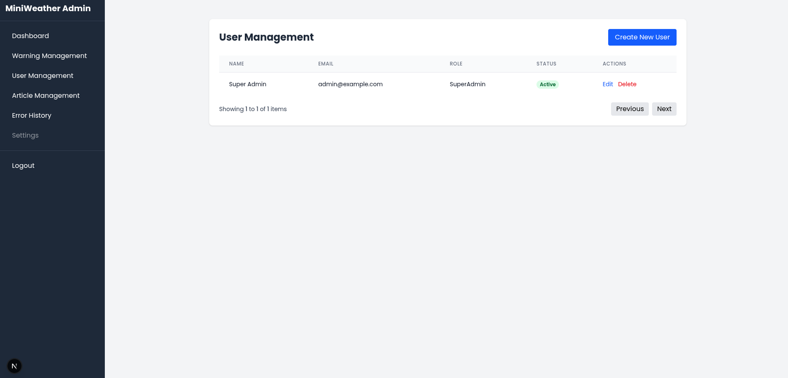
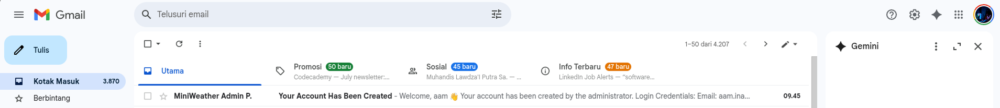

Manage Users
Fitur manajemen pengguna digunakan oleh SuperAdmin untuk menambahkan, menghapus, atau mengatur akun pengguna (User atau Admin) yang dapat mengakses sistem Miniweather Station Dashboard.
✅ 1. Akses Menu User Management
Klik menu User Management dari sidebar untuk melihat daftar pengguna saat ini.

➕ 2. Tambahkan Pengguna Baru
Klik tombol Create New User di kanan atas untuk membuka form penambahan.

üìù 3. Isi Form Pengguna
Isi formulir berikut:
- Name: Nama pengguna
- Email: Email pengguna
- Role: Pilih peran
Admin,SuperAdmin, atauUser

⚠️ Setelah mengisi, klik tombol Create
üìß 4. Cek Email Pengguna
Setelah akun dibuat, sistem akan mengirimkan email otomatis ke alamat email pengguna yang berisi kredensial login.

Pengguna akan menerima email dengan isi seperti:
- Email: alamat email terdaftar
- Temporary Password: sandi awal untuk login
- Catatan: fitur ganti password masih dalam pengembangan

✅ 5. Verifikasi Data di Tabel
Setelah berhasil dibuat, pengguna akan muncul di daftar manajemen dengan status:
- Active: Jika sudah aktif
- Inactive: Jika akun belum digunakan untuk login pertama kali

üõ†Ô∏è Catatan Teknis
- Password awal bersifat sementara dan dikirim via email
- Akun dengan role
SuperAdminmemiliki akses penuh, termasuk pengelolaan user - Hanya
SuperAdminyang dapat membuat akun baru
Dengan fitur ini, pengelolaan akun pengguna menjadi lebih terstruktur dan aman. Admin dapat mengatur siapa saja yang dapat menggunakan sistem, serta melakukan kontrol akses berdasarkan peran.